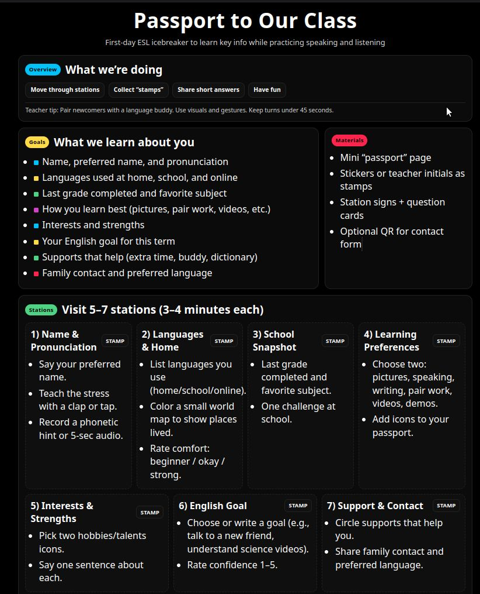

Understanding ELLs within their sociocultural context is fundamental to effective teaching. Through Module 3, I've developed a framework for establishing positive communication with ELLs and their families, recognizing that language learning extends beyond the classroom into the rich tapestry of students' cultural identities, family dynamics, and community connections.
Start with welcome calls/home visits, name pronunciation checks, and interest inventories. Use strengths-first language: "Your child is multilingual and brings rich experiences…"
Provide translated notices and interpretation for meetings. Use plain language, visuals, and multimodal communication (texts, voice notes, short videos).
Ask families how they prefer to be contacted and at what times. Invite feedback regularly (quick pulse surveys in home languages; option to reply via voice).
Ask families about goals for schooling and language use at home/community. Avoid assumptions; check understanding and invite corrections.
Share learning targets and rubrics in accessible formats. Provide predictable communication rhythms (e.g., Friday learning snapshot).
Share specific examples of students' progress with photos, captions, and short audio notes when permitted.
| Tool | Purpose | Implementation |
|---|---|---|
| Multilingual Surveys | Gather information about language backgrounds, interests, and educational experiences | Distribute at beginning of year; available in multiple languages; include visual supports |
| Digital Storytelling | Allow students to share their experiences and cultural backgrounds | Guide students in creating short videos or audio recordings about their family traditions |
| Family Interviews | Learn about family educational values and aspirations | Conduct through phone calls, home visits, or virtual meetings with interpreters |
| Cultural Portfolios | Document students' cultural identities and linguistic repertoires | Students compile artifacts, photos, and writings that represent their cultural background |
This activity was designed as a part of my course (see Appendix).
| Resource | Purpose | Target Audience |
|---|---|---|
| Bilingual Family Handbook | School policies, procedures, and resources explained in accessible language | New families, especially those unfamiliar with the U.S. school system |
| Vocabulary Picture Dictionaries | Help families learn school-related terminology in English | Parents with beginning English proficiency |
| Digital Communication Platform | Real-time translation for teacher-family messaging | All families, especially those with technology access |
| Community Resource Guide | Information about local services, libraries, and cultural organizations | Newcomer families needing community connections |
This activity was designed as a part of my course (see Appendix).
Students and families contribute artifacts (recipes, songs, proverbs, letters). Students curate captions in both languages.
Learners map meaningful places, interview family/community members, and present in mixed-language formats.
Peer teaching: students teach classmates key phrases, songs, or games from home languages.
Student-led conferences where learners share goals, work samples, and next steps with bilingual supports.
Small-group discussions where students can plan in L1 and present in English, with visuals and sentence frames.
Invite parents to share skills (gardening, coding, crafts, entrepreneurship) connected to units.
Partner with students to interview family members about their immigration journeys, creating a class "Heritage Quilt" or digital storytelling project.
Celebrate diversity through food fairs, music performances, or guest speakers from the community.